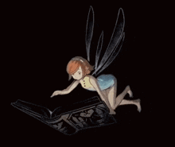

.png) |
Personal Website"Wildan Abid Fahlavi Atmoko" |
.png) |
||
|---|---|---|---|---|
Beranda |
Profil |
Album |
Artikel |
Buku Tamu |
Artikel |
||||
Bermain GameBermain game adalah salah satu kegiatan yang digemari oleh banyak orang, terutama di kalangan remaja. Game tidak hanya menjadi hiburan semata, tetapi juga sudah berkembang menjadi bagian dari gaya hidup dan bahkan profesi bagi sebagian orang. Dengan perkembangan teknologi yang pesat, kini bermain game dapat dilakukan di berbagai perangkat seperti komputer, konsol, maupun smartphone.(Baca selengkapnya) |
||||
|  | Membaca MangaManga adalah komik khas Jepang yang telah populer di seluruh dunia. Gaya ceritanya yang menarik, karakter yang kuat, serta gambar yang ekspresif membuat banyak orang gemar membacanya, dari anak-anak hingga orang dewasa. Saat ini, manga bisa dibaca dengan mudah, baik dalam bentuk buku cetak maupun digital melalui berbagai aplikasi.(Baca selengkapnya) |
|||
Mendengarkan MusikMusik adalah bagian penting dalam kehidupan manusia. Hampir setiap orang menyukai musik, baik untuk hiburan, teman belajar, maupun pelepas stres. Dengan kemajuan teknologi, kini kita bisa mendengarkan berbagai genre musik dengan mudah melalui smartphone, aplikasi streaming, atau media sosial. Musik telah menjadi bagian dari rutinitas banyak orang di seluruh dunia.(Baca selengkapnya) |
||||